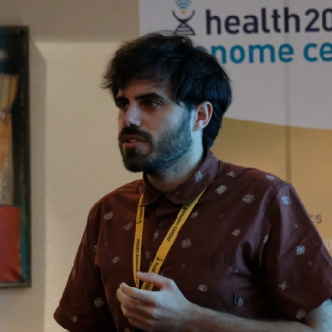

David Mas-Ponte
Ph.D. Student in Bioinformatics at the
Genome Data Science Lab at
IRB Barcelona
orcid.org/0000-0001-7409-305X
 orcid.org/0000-0001-7409-305X
orcid.org/0000-0001-7409-305X
orcid.org/0000-0001-7409-305X
orcid.org/0000-0001-7409-305X